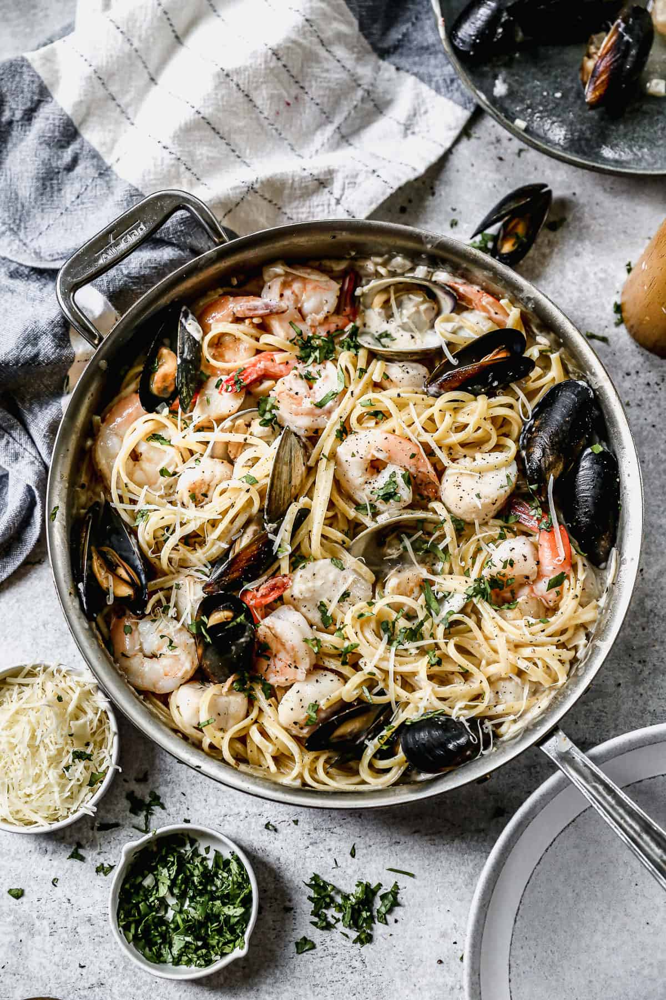

SeaFood Pasta

Description
- 1 lb linguine noodles
- 4 Tablespoons butter
- 1/2 lb uncooked shrimp
- 1/2 lb scallops
- 1/2 lb mussels
- 1/2lb clams
- Kosher Salt
- Freshly Ground Black Pepper
- 1 Shallot
- 4 Cloves of Garlic
- 3/4 Cup dry White Wine
- 1 1/4 cup of Heavy Cream
- 1 teaspoon of chicken bouillon Paste
- 1 up of freshly grated Parmesan Cheese
- Lemon zest
- 1/4 cup fresh chopped parsley
Steps
- Mix creamy filling. Beat the mascarpone, cream, sugar, and vanilla together until stiff peaks.
- Dip lady fingers. Add the espresso and liqueur (if using) to a shallow bowl and dip the lady fingers on both sides (don’t let them soak–just a quick dip!)
- Layer mascarpone. Smooth a layer of the mascarpone/whipped cream mixture on top of the lady fingers.
- Repeat. Add another layer of lady fingers (dipped in coffee and liqueur) and another layer of cheese mixture. Dust with cocoa powder.